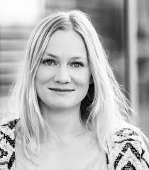

Wie is Nicky Nibbeling?

Nicky Nibbeling is onderzoeker bij het lectoraat Kracht van Sport en docent bij de opleiding Toegepaste Psychologie. Als onderzoeker werkt zij aan het PAUL- project. Dit project heeft als doel stedelingen te motiveren om voldoende te bewegen. Hierbij wordt gebruikt gemaakt van innovatieve technologie, zoals een app en beacons. De app, die binnen het PAUL-project ontwikkeld wordt, onderscheidt zich op verschillende manieren van bestaande beweeg- en sportapps:
de PAUL app wordt gebaseerd op evidence-based gedragsveranderingstechnieken;
de doelgroep is mensen die nog weinig bewegen;
we creëren een interactieve beweeg omgeving door de toevoeging van beacons. Dat zijn zendertjes waardoor de app de gebruiker op specifieke locaties oefeningen en aanmoedigingsberichten kan sturen.
Naast onderzoeker is Nicky docent en geeft zij les binnen de minor Sport- & Prestatiepsychologie en in vakken over onderzoeksvaardigheden. Ook is zij coördinator van de minor Sport- & Prestatiepsychologie.
Nicky is afgestudeerd als sportpsycholoog aan de Vrije Universiteit van Amsterdam. Daarna is zij gepromoveerd op een gecombineerd project van de faculteit Bewegingswetenschappen van de VU en TNO. De titel van haar proefschrift is ‘Effects of anxiety and exercise-induced fatigue on operational performance’. Haar interesse voor sport en sportpsychologie vindt haar oorsprong in haar eigen sportachtergrond. Als professioneel wildwater kanoslalom atleet nam zij deel aan WK’s, EK’s en wereldbekerwedstrijden van 2001 t/m 2009 en heeft ze medailles behaald op zowel de Europese als Wereldkampioenschappen raften in 2011.
Het intervieuw met Nicky Nibbeling
Kunt u zichzelf voorstellen?
Mijn naam is Nicky Nibbeling en werk op de Hogeschool van Amsterdam. Ik ben onderzoeker bij het lectoraat Kracht van Sport en docent bij de opleiding Toegepaste Psychologie. Als onderzoeker werk ik o.a. aan het PAUL- project. Dit project heeft als doel stedelingen te motiveren om voldoende te bewegen. Hierbij wordt gebruikt gemaakt van innovatieve technologie, zoals een app en beacons. Ook zijn nu van plan om met deze technologie scholieren te motiveren om voldoende te bewegen. Dit project heet Workout4Schools!
Hoe gaat dat dan in zijn werk?
In samenwerking met de gemeente Amsterdam zijn in het Amstelpark en het Oosterpark allerlei zendertjes geplaatst. Zogenaamde beacons. Deze kunnen via Bluetooth communiceren met je smartphone. Daar moet je wel een speciale app voor hebben. Als je die app hebt geïnstalleerd dan kun je op bepaalde plekken speciale oefeningen doen of je wordt aangemoedigd met motiverende berichten. Deze infrastructuur willen we nu ook inzetten om scholieren meer te laten bewegen in de publieke ruimte. We willen natuurlijk ook dat deze mogelijkheid bekendheid krijgt in de stad zodat scholen, docenten en scholieren hier gebruik van maken.
En jullie willen dus een website?
Ja, een website is zoals jullie wel weten het visitekaartje naar de buitenwereld. We willen vooral een hele overzichtelijke website die vrij makkelijk bekeken kan worden en goed leesbaar is. Ook moeten docenten lesmateriaal kunnen vinden op deze website die ze kunnen gebruiken om hun les te kunnen geven in het park.
Voor wie is de website bedoeld?
De website is in eerste instantie bedoeld voor scholen. Met scholen bedoel ik vooral basisscholen en middelbare scholen.
En wat moet er precies op die website komen te staan?
De website is dus een plek waar scholen informatie over het project kunnen vinden en een hoop lesmateriaal per vak.
Op de voorpagina moet iets korts staan over het project. Een paar regels tekst over de bedoeling van de website. En er moeten linkjes naar (nieuws) artikelen komen te staan die te maken hebben met het belang van bewegen voor jongeren.
Op de pagina genaamd Locaties moet informatie zijn over de zenders in het Oosterpark en het Amstelpark. Zo moet per locatie een map toegevoegd worden waar de zendertjes op de juiste locaties worden afgebeeld (markers). Je mag ervan uitgaan dat het aantal locaties in de toekomst zal groeien. Misschien kunnen jullie daar rekening mee houden tijdens het ontwerpen van de pagina.
Op de pagina Lessen moeten lesplannen per vak te vinden zijn. Dus als een aardrijkskundedocent iets met bewegen in het park wil doen, dan moet hij/zij op deze pagina allerlei lessen kunnen downloaden met werkvormen, opdrachten en ideetjes voor in de les. En zo moet ook de geschiedenisdocent, de docent Frans en de docent wiskunde dit kunnen doen. eigenlijk wil je dus per vak een lijst van linkjes naar bestaande lessen zien. Bovenaan de pagina graag ook een lijst van de 5 laatst toegevoegde lessen. Zorg er vooral voor dat deze pagina er leuk uitziet, met plaatjes enzo. Je kunt je laten inspireren door https://buitenlesdag.nl/buitenlesbundel/
Op de pagina Contact moeten allerlei praktische informatie over het project te vinden zijn. Logo's van de partners, links naar social media, Het zou leuk zijn als ze ons vanuit deze pagina een berichtje kunnen sturen. Als dit bericht dan in ons mailbox terechtkomt dan kunnen we hen een mailtje terugsturen. Kan dat?
Ja dat kan zeker. Laat dat maar aan ons over!
Welke kleuren wilt u dat we op de website gebruiken?
Op zich sta ik open voor veel kleurencombinaties. Graag zou ik willen dat jullie met een voorstel komen voor een kleurenpalet. Dan kan ik daar goedkeuren of afkeuren.
Heeft u al een logo?
Nee, helaas nog niet. Willen jullie dat voor ons doen? Kleuren die vooral een positieve en actieve uitstraling hebben. De kleuren moeten namelijk wel passen bij de kleuren van de website. Wat ik wel heel belangrijk vind is dat het logo leuk wordt (en niet zo serieus).
Heeft u ook al teksten voor de website en wat foto's?
Ehmm.. nu nog niet! Ik ben er wel mee bezig. Zodra jullie een design hebben wat ik goed heb gekeurd dan zal ik de foto's en teksten aanleveren
Heeft u ook al hosting geregeld?
Wat bedoel je met hosting?
Hosting is de plek waar de website op gepubliceerd kan worden, zodat anderen je website kunnen bezoeken. Meestal regel je dat bij een hostingprovider voor een klein bedrag per jaar.
Owwww .. bedoel je dat! Nou, daar heb ik dus echt geen verstand van! Ik laat mij graag adviseren door jullie!
Heeft u verder nog wensen?
Een van de dingen die ik heel belangrijk vind is dat de website vooral heel snel moet zijn. Ik kom wel eens websites tegen waar je dan meer dan 10 seconden moet wachten voordat je de plaatjes ziet. Dat moeten we echt niet hebben! De website moet snel kunnen laden met de bijbehorende plaatjes.
En ook niet onbelangrijk… Voordat jullie echt aan de slag gaan met de website wil ik wel even een ontwerp zien.
Dat is geen enkel probleem! Wij maken namelijk altijd eerst een ontwerp in de vorm van wireframes.
Wire-wat?
Een wireframe :) Dit is een schets van een pagina waarop beschreven staat wat er op de pagina komt te staan.
Klinkt als iets handigs! Ik ben benieuwd!

 Nicky Nibbeling - https://www.facebook.com/nicky.nibbeling
Nicky Nibbeling - https://www.facebook.com/nicky.nibbeling